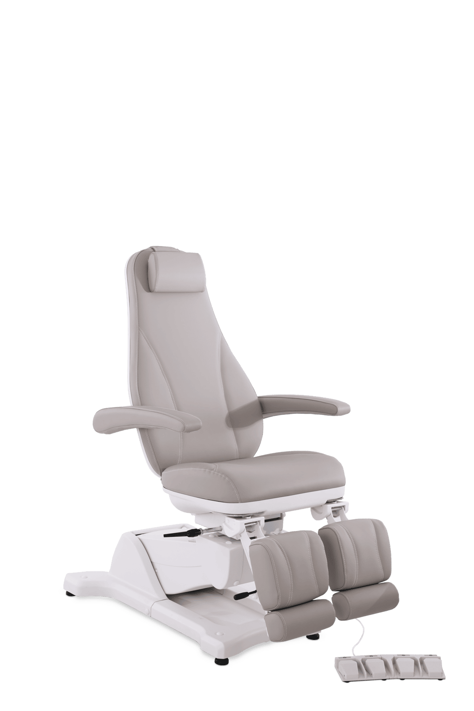

Pacienta krēsls VEGA

Funkcionāls pacienta krēsls ar pagriešanas iespēju
Sēdekļa platums: 58 cm
Sēdekļa dziļums: 53 cm
Sēdekļa minimālais augstums: 60 cm
Sēdekļa maksimālais augstums: 98 cm
Pēdu balstu augstums: max. 109 cm
Kāju un pēdu balstu garums: 35–53 cm
Maksimālā noslodze: 200 kg
Rotējamība: 45° uz katru pusi
Spriegums: 230 V
Aprīkots ar 2 motoriem ērtai sēdekļa augstuma un slīpuma regulēšanai, arī atzveltnes noliekšanai/pacelšanai — ērti un higiēniski vadāmi ar kājas pedāli.
Divdaļīgi kāju balsti ar gāzes atsperēm kāju un papēžu atbalstam (mehāniski izvelkami).
Komfortabls un viegli kopjams polsterējums piemērots ikdienas lietošanai — pat garāku procedūru laikā sniedz maksimālas ērtības.
Krēslu var pagriezt par 45° pa labi un pa kreisi.
Kāju balsti pagriežami uz āru līdz 90° ērtai uzkāpšanai un nokāpšanai.
Zīmols: GEHWOL TECH.
Vēlaties sadarboties? Sazinieties ar mums, izmantojot kontaktinformāciju lapas apakšpusē.